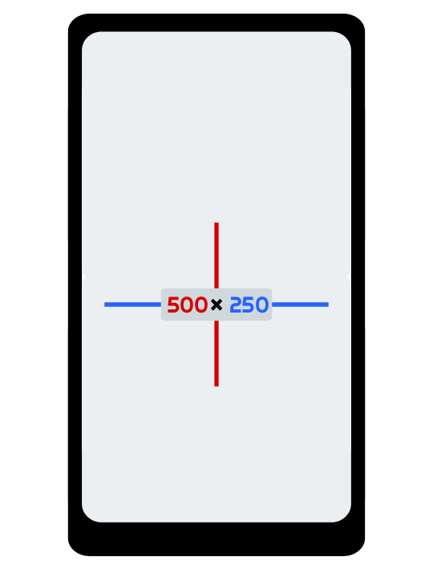

User guide
After viewing the advertisement, you will be taken to a page with an indicator that will show the dimensions of your window. If the application is open in full screen, then this data can be read for the screen size of your device.

If the phone is turned over or the size of the window in which the application is open is changed, the data shown on the indicator will change.